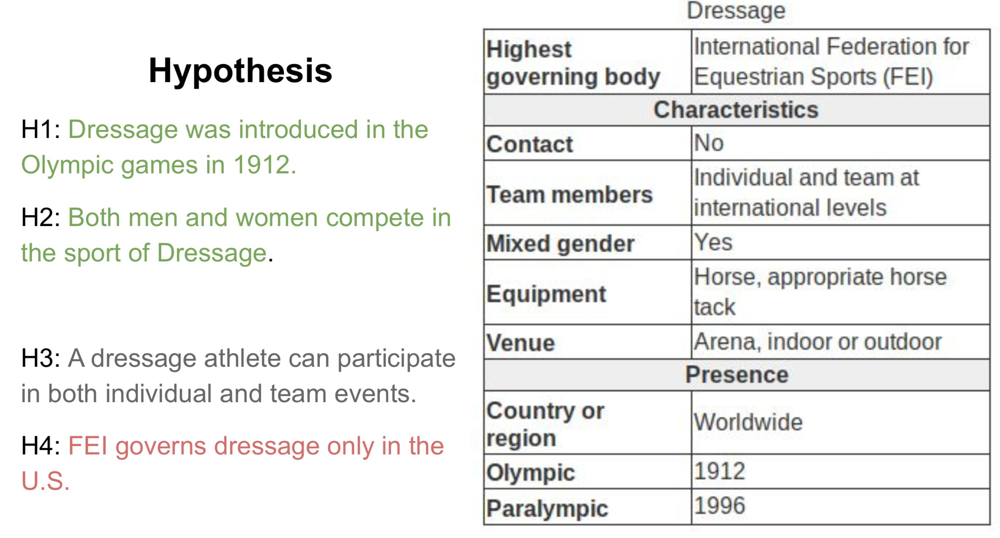

An Effective Platform for Tabular Perturbation
About
To truly grasp reasoning ability, a Natural Language Inference model should be evaluated on counterfactual data. TabPert facilitates this by assisting in the generation of such counterfactual data for assessing model tabular reasoning issues. TabPert allows a user to update a table, change its associated hypotheses, change their labels, and highlight rows that are important for hypothesis classification. TabPert also captures information about the techniques used to automatically produce the table, as well as the strategies employed to generate the challenging hypotheses. These counterfactual tables and hypotheses, as well as the metadata, can then be used to explore an existing model’s shortcomings methodically and quantitatively.
tl;dr: TabPert is a tool to augment existing tabular datasets to effectively and efficiently create counterfactual datasets.
Right Inference ≠ Right Reasoning
Existing NLI models tend to exploit annotation artefacts, pre-trained knowledge, and hypothesis biases in data to answer a premise. Therefore, to test their performance effectively, we must test them on adversarial data, on which their performance significantly reduces. However, perturbing existing tabular datasets to create counterfactual data is difficult and inefficient without specialised tools. This is where TabPert comes in!
The Utility of TabPert
TabPert is built specifically to allow annotators to effectively and efficiently perturb tabular data and hypotheses.
- TabPert streamlines the process of creating adversarial data
- TabPert logs data (called metadata) about the kinds of changes done to the dataset at each step of perturbation. This data can then be used to analyse models and pinpoint their weaknesses
- TabPert automates part of the perturbation process, making it easier for annotators to work while also reducing annotator bias
- TabPert can be customised to any tabular perturbation task
Example Table
For a case study of TabPert, we use the InfoTabS dataset. Below is an inference example from InfoTabS. On the right is a premise and on the left are some of its hypotheses. Here, colors 'green', 'gray', and 'red' represent true (i.e., entailment), maybe true (i.e., neutral) and false (i.e., contradiction) statements, respectively.

How does it Work?
Annotation proceeds in two stages: the automatic stage followed by the manual stage. Metadata is collected in both stages: metadata for changes to the table is logged automatically, while metadata for hypothesis changes is input by the annotator.
In the automatic perturbation stage, values are shuffled around the tables in the dataset. Values of one 'type' can be replaced by other values of the same type. These types must be specified beforehand. TabPert automatically logs the 'source' of each shuffled value, and this data can be used to find shortcomings in the model like overfitting.
In the manual perturbation stage, annotators correct any logical inconsistencies introduced in the table during the automatic stage, and perturb hypotheses. TabPert automatically logs the kinds of changes done to the table. For the hypotheses, the annotator must manually specify the relevant rows (sections in the table necessary to answer a hypothesis) as well as the strategy used to change each hypothesis. For more information about this stage, click here.
Results
Our team used TabPert to creat a counterfactual dataset from the InfoTabS dataset, consisting of 47 tables with 423 hypotheses. We sorted the hypotheses according to the perturbation strategy marked by the annotators and ran the InfoTabS RoBERTaLarge model on them. The results are shown in the figures below. Note especially the significant performance drop on the counterfactual data in the first three strategies—these were the methods where annotators flipped the label of the hypothesis. So, collecting all that metadata has helped us detect significant hypothesis bias in the model!
Now, as another example, let's look at how the model performs when given only partial premises in the table below. First, note that when shown just the hypotheses without any premise, the model's performance is closer to majority-label baselines on the counterfactual dataset than on the original dataset. This confirms a reduction in hypothesis bias in the new dataset. Next, when shown only the relevant rows while answering a hypothesis, the model's performance falls on the original dataset, indicating that it utilises irrelevant rows as artefacts. However, in the same situation, the performance improves on the counterfactual dataset!
| Model Type | Original | Counterfactual |
|---|---|---|
| Majority | 33.33 | 33.33 |
| Hypothesis Only | 64.32 | 44.85 |
| All Rows | 78.91 | 61.26 |
| Relevant Rows | 74.11 | 65.85 |
| Human | 84.8 | 85.8 |
So, TabPert has both, helped in the creation of an effective adversarial dataset, and helped identify model weaknesses!
People
TabPert has been prepared by the following people at IIT Kanpur and School of Computing of University of Utah:


Citation
Please cite our paper as below if you use TabPert.
@inproceedings{jain-etal-2021-tabpert,
title = "{T}ab{P}ert : An Effective Platform for Tabular Perturbation",
author = "Jain, Nupur and
Gupta, Vivek and
Rai, Anshul and
Kumar, Gaurav",
booktitle = "Proceedings of the 2021 Conference on Empirical Methods in Natural Language Processing: System Demonstrations",
month = nov,
year = "2021",
address = "Online and Punta Cana, Dominican Republic",
publisher = "Association for Computational Linguistics",
url = "https://aclanthology.org/2021.emnlp-demo.39",
pages = "350--360",
abstract = "To grasp the true reasoning ability, the Natural Language Inference model should be evaluated on counterfactual data. TabPert facilitates this by generation of such counterfactual data for assessing model tabular reasoning issues. TabPert allows the user to update a table, change the hypothesis, change the labels, and highlight rows that are important for hypothesis classification. TabPert also details the technique used to automatically produce the table, as well as the strategies employed to generate the challenging hypothesis. These counterfactual tables and hypotheses, as well as the metadata, is then used to explore the existing model{'}s shortcomings methodically and quantitatively.",
}Acknowledgement
Authors appreciate the Utah NLP group members' valuable suggestions at various phases of the project, as well as the reviewers' helpful remarks. We also acknowledge NSF grants #1801446 (SATC) and #1822877 (Cyberlearning), as well as a kind donation from Verisk Inc. We also like to thank Alokit Innovations for providing a mentoring platform.